Vorschau vom 12.10.2026. Alle Bilder zeigen Schaudaten aus dem Prüflauf
status-test.mjs — keine echten Vorgänge, keine Kundennamen.
Was sich geändert hat: Jede Karte trägt oben eine Statusleiste mit der tatsächlichen
Tätigkeit, dem Zuständigen, dem konkreten Wartegrund, der nächsten Aktion und dem letzten
bestätigten Signal. Der Status allein beweist nichts mehr: Nur wenn Tony oder Claude
ausdrücklich meldet, was gerade getan wird, zeigt das Board laufende Arbeit. Sonst steht dort
„Status nicht aktuell bestätigt“. Wartende Karten drehen nichts mehr und der aktive Schritt
wird als angehalten gezeichnet, statt weiter blau zu laufen.
Ein Vorgang durch alle Zustände
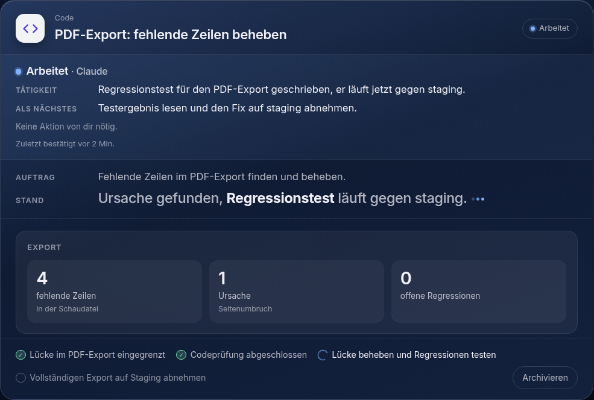
arbeitetMarke und Leiste sagen dasselbe. Die Tätigkeit ist
ein Satz über die Sache, nicht „in Arbeit“. Nur hier bewegt sich etwas: der Punkt pulst, der
laufende Schritt dreht. Dazu die nächste Aktion und ausdrücklich „Keine Aktion von dir nötig.“
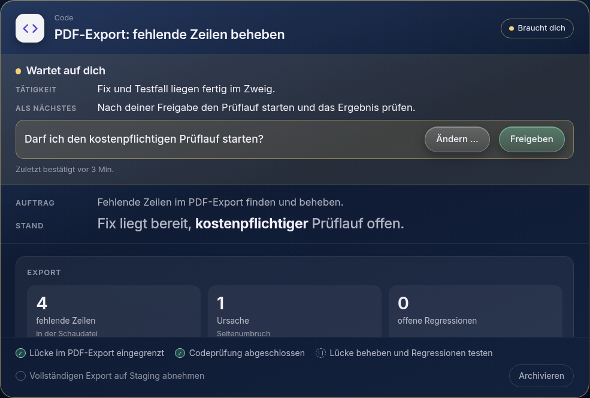
wartet auf dichDie Frage steht im gelben Kasten, direkt
daneben die Knöpfe. Der angefangene Schritt ist als angehalten gezeichnet (zwei Balken statt
Kreisel) — der Widerspruch aus dem Screenshot kann so nicht mehr entstehen.
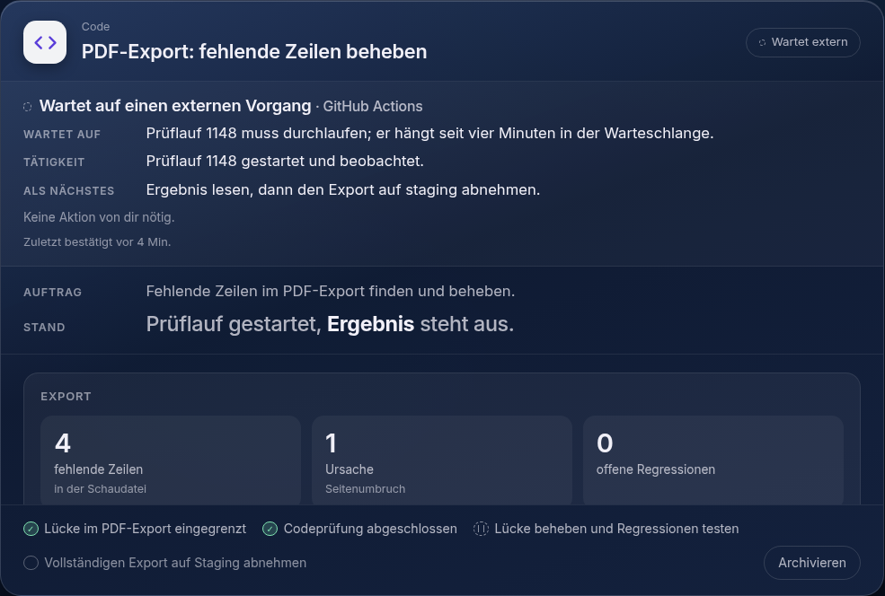
wartet externDer Wartegrund ist die konkrete Abhängigkeit
mit Nummer, nicht „wartet auf Antwort“. Nichts dreht sich, und es steht da, dass Marcel nichts
tun muss.
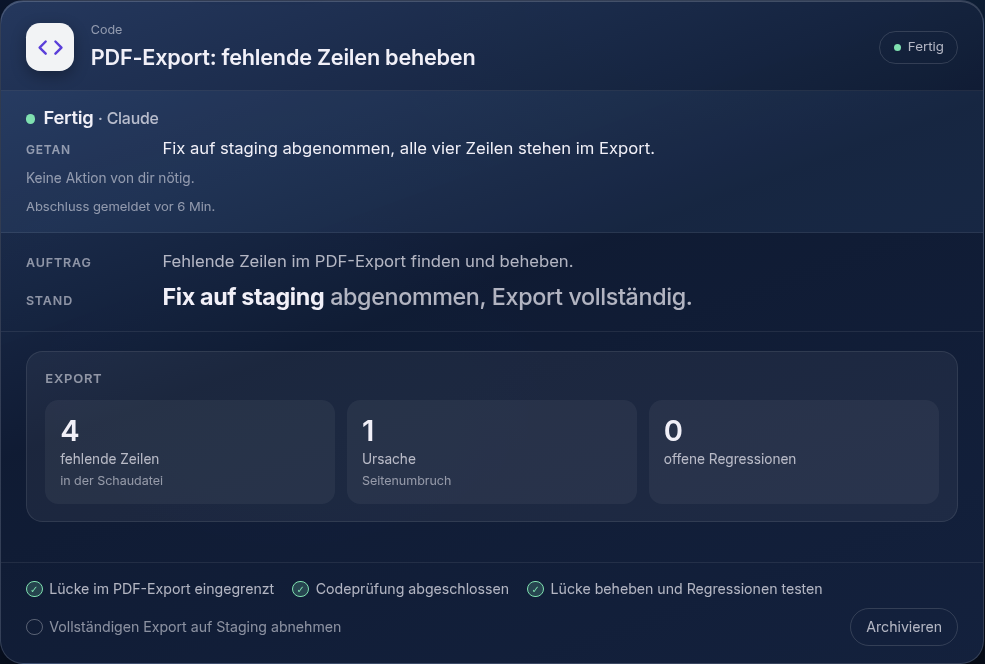
fertigKein Schritt ist mehr hervorgehoben, auch wenn Tony
noch einen als aktuell markiert hatte. Statt „Tätigkeit“ steht dort „Getan“.
Wenn kein verlässliches Signal da ist
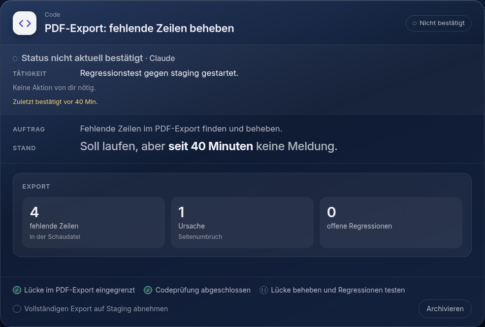
nicht bestätigtStatus „arbeitet“, aber seit 40 Minuten keine
Meldung: Das Board behauptet dann keine laufende Arbeit mehr, sondern sagt, wann zuletzt etwas
bestätigt wurde. Keine Prozentzahl, keine Restzeit, kein ewiger Spinner.
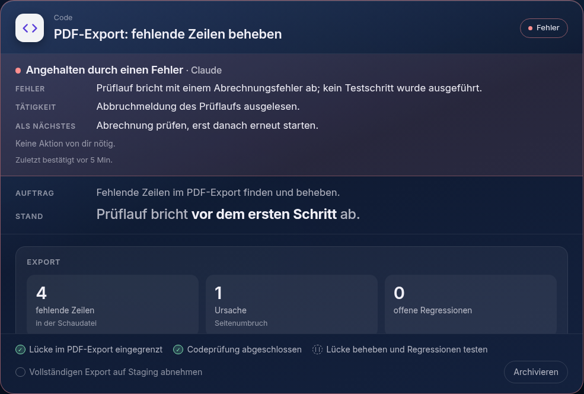
FehlerDie Abbruchmeldung steht zuoberst im Klartext, darunter
was daraufhin getan wurde und was als Nächstes passiert.
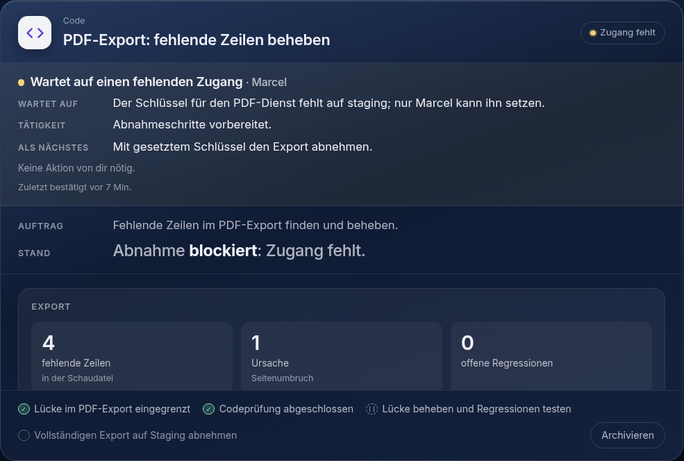
Zugang fehltEin fehlender Schlüssel oder ein fehlendes Recht
ist ein eigener Zustand, nicht irgendein Warten.
Fenster aus der Zeit davor
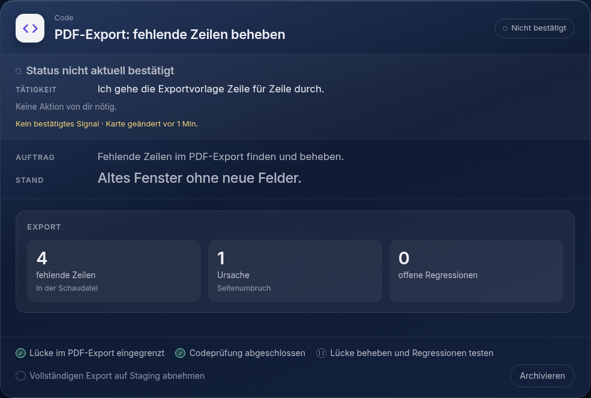
Ohne die neuen Felder wandert der alte Hinweis in die Karte — dort, wo Marcel ihn
sucht, statt klein unter die Bühne. Ohne bestätigtes Signal gilt die Karte als nicht
bestätigt.
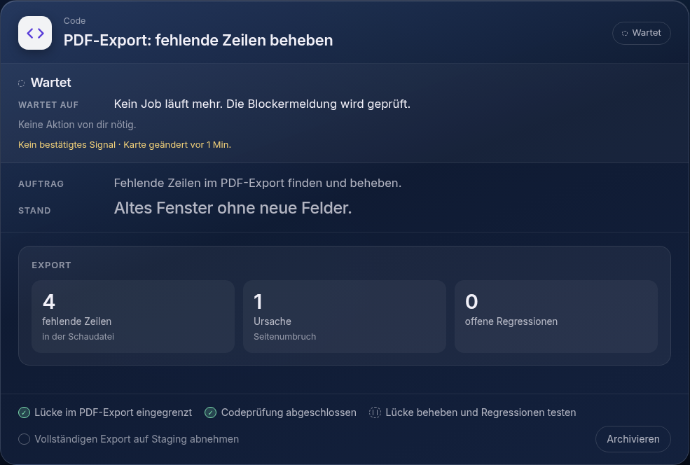
Dasselbe beim Warten: der alte Hinweis wird als Wartegrund gezeigt, die Wartungsart
bleibt neutral „Wartet“ — geraten wird nichts. Fehlt auch der Hinweis, steht dort offen
„Grund nicht genannt“.
Übersicht: Rondell und Sitzungsleiste
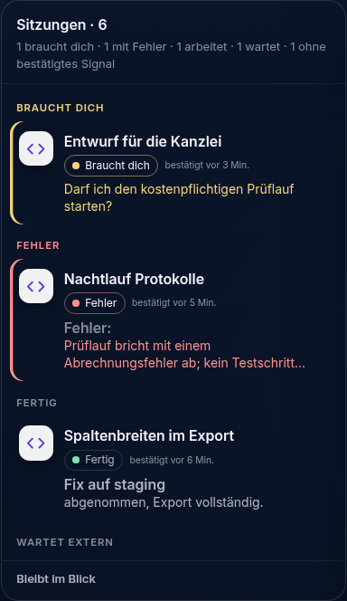
Die Kopfzeile beantwortet die Frage, warum nichts vorangeht: „1 braucht dich · 1 mit
Fehler · 1 arbeitet · 1 wartet · 1 ohne bestätigtes Signal“. Jede Zeile trägt Marke, Signal und
entweder die Frage, den Fehler oder den Wartegrund.
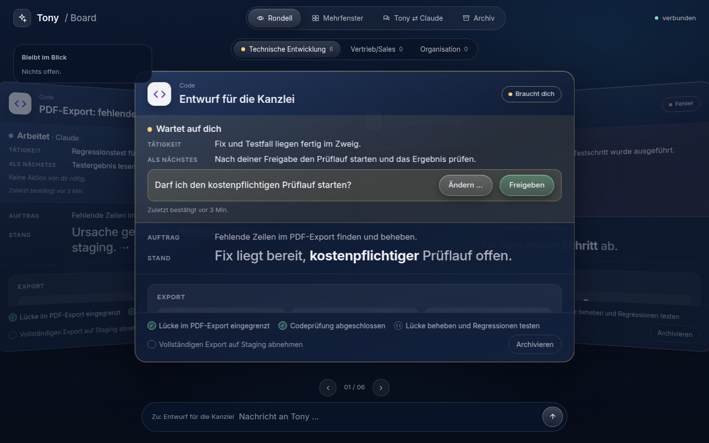
Im Rondell steht dieselbe Leiste in der Karte; vorn steht, was Marcel braucht.
Geprüft
status-test.mjs — 46 Prüfungen: der Verlauf arbeitet → wartet auf Person →
wartet auf externen Job → fertig, dazu veraltetes Signal, Fehler, fehlender Zugang, Fenster ohne
die neuen Felder, Sitzungsleiste und Rondell. Dabei auch: keine Animation außer bei bestätigt
laufender Arbeit, keine erfundenen Zahlen, keine reine Änderungszeit als Lebenszeichen.
compat-test.mjs — 18 Prüfungen an der Schnittstelle: alte Aufrufe ohne die neuen
Felder funktionieren weiter, „wartet“ ohne konkreten Grund wird abgelehnt, ein bestätigtes Signal
entsteht nur aus einer genannten Tätigkeit.